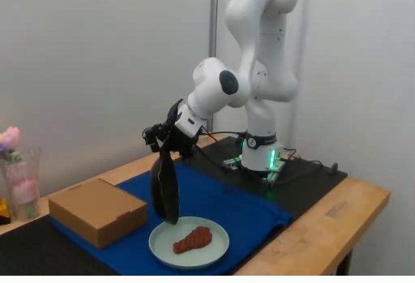
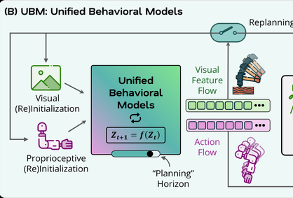

I work at the intersection of machine learning systems, infrastructure, and robot learning.
I'm a B.S./M.S. student in computer science at Georgia Tech, where I conduct research in the STAR Lab with Prof. Harish Ravichandar. My research focuses on learning models of robot behavior for dexterous manipulation, including our CoRL 2026 paper on Koopman-based visuo-motor planning.
Beyond research, I build systems that make AI useful in practice—from multimodal retrieval over aviation safety footage at Leidos to authorization infrastructure for tool-using AI agents at a stealth startup.
Experience
Machine Learning Engineer Intern, Leidos
May 2026 – Aug 2026
TL;DR: Making large collections of aviation safety footage searchable, with evidence traceable to the original video.
I developed a multimodal indexing and retrieval system that transforms raw footage into structured, searchable safety events. A C++ video-processing pipeline combines TensorRT-based detection and object tracking with Kafka ingestion, producing more than 100,000 detections across 10,000+ events. Retrieval integrates semantic search, knowledge-graph traversal, and reranking, with 500 ms p95 latency. For complex investigations, a vision-language agent queries four evidence sources concurrently and uses timeouts to avoid slow dependencies, producing grounded responses in approximately two seconds.
Software Engineer, Stealth Startup
Aug 2025 – Mar 2026
TL;DR: Building the authorization layer that lets AI agents use powerful tools without bypassing security controls.
I built a TypeScript-based agent control plane using Google ADK and MCP to orchestrate eight remote tools with scoped permissions, human approval workflows, and auditable execution. I also developed an identity and authorization model spanning users, services, and autonomous agents, enforcing least-privilege access based on role, data sensitivity, and execution context. Automated policy evaluation reduced manual analyst review by 40%, while sensitive operations were checked against more than 25 rules in approximately 50 ms.

Undergraduate Researcher, STAR Lab
Jan 2025 – present
TL;DR: Learning dexterous robot behaviors directly from visual observations, with 85% success across four real-world tasks.
My work focuses on learning compact representations of visual observations and modeling how robot-object interactions evolve over time. The pipeline uses SAM3 for object segmentation, an autoencoder for visual-state encoding, and a Koopman model to predict latent dynamics for control. I also developed the supporting data and evaluation infrastructure, processing more than 200 expert demonstrations with parallel Kubernetes workflows and HDF5 datasets stored on Google Cloud Storage.
Research

Going with the Flow: Koopman Behavioral Models as Pseudo Planners for Visuo-Motor Dexterity
TL;DR: Learning full-horizon manipulation behaviors while retaining the ability to replan when observations diverge from predictions.
Many visuomotor policies generate actions in short segments, requiring frequent replanning and potentially disrupting smooth execution. K-UBM instead models the evolution of robot states and visual features jointly, using linear dynamics in a learned latent space to predict an extended behavior trajectory and its expected visual evolution. Discrepancies between predicted and observed visual features trigger replanning when needed. The approach matches or outperforms leading baselines across seven simulated and four real-world manipulation tasks.
LUCiD: Mitigating Hallucinations in Large Language Models with Learned Unilayer Contrastive Decoding
TL;DR: Reducing language-model hallucinations by learning both the contrastive signal and how strongly to apply it at each token.
LUCiD extends contrastive decoding by replacing a fixed, untrained intermediate-layer signal with a learned residual probe and an adaptive, token-level gate. The probe estimates a contrasting token distribution, while the gate controls its contribution to decoding—all without updating the backbone language model. Evaluated on five models ranging from 0.6B to 12B parameters, the method achieves the highest SQuAD F1 on four, including an improvement from 0.711 to 0.815 on LLaMA-3-8B under greedy decoding, with approximately 5–10% inference overhead.
TL;DR: Combining graph-based risk modeling with a fault-tolerant feature store and low-latency retrieval.
I built a heterogeneous graph neural network to identify compliance risk across more than 45,000 companies and executives, improving F1 by 12% over an XGBoost baseline. To support ingestion and serving, I implemented a distributed feature store in Go with Raft-based replication, write-ahead logging, Kafka ingestion, and mTLS-secured gRPC, then tested its recovery behavior under node failures. A two-tower retrieval model pairs server-side search with an INT8-quantized query encoder that runs on Android in under 10 ms.
TL;DR: Exploring the systems techniques that make language-model inference faster and more predictable across accelerators.
I developed an inference server spanning GPU and TPU backends, with optimizations for scheduling, memory use, and attention computation. The GPU path combines continuous batching, INT8 quantization, fused attention, CUDA Graphs, and a C++ KV-cache manager exposed through pybind11; speculative decoding with four draft tokens improves throughput by 1.59×. For TPUs, a tiled attention kernel written in JAX Pallas achieves a 1.52× speedup at batch size 4 and sequence length 2,048. The serving layer also includes semantic caching, admission control, prompt-injection filtering, and AWS deployment with load testing.
TL;DR: Benchmarking how architecture and workload shape the performance of distributed GPU and TPU training.
I compared distributed training implementations for GPT-2 and a retrieval model using PyTorch FSDP on GPU clusters and JAX pjit on TPU pods. The TPU configuration delivered a 2.9× speedup for GPT-2 but only a 1.2× gain for the retrieval workload, illustrating how model structure affects accelerator efficiency. The benchmark also incorporates custom CUDA implementations of ring AllReduce and RMSNorm, checkpoint recovery through Google Cloud Storage, and per-process data sharding to reduce storage contention.